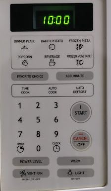

Existing microwave:
Operation

Controls

Problems with existing microwave:
- There are a lot of rarely used buttons like timer, power level and light which occupies precious room.
- Time cook requires manual entry of time but auto cook and auto defrost are not required to manully enter time each time. Time cook is a grouped together with auto cook and auto defrost
- The light option turns on a light at the bottom of the microwave (intended to show light for the stove). This might confuse the user.
Common sequence of actions:
- Open the microwave door and place the food item.
-
Select required operation
- if we want time cook select time cook and sets time
- if we want in built options like beverage, popcorn the user selects it.
- Press start.
- The countdown for remaining time to cook displays in the screen.
- Once the process is completed, the user will be notified with a audio sound.
Microwave provides feedback in 3 ways:
- Idle state/Ready to use: Current time is shown on the screen.
- During the process: Countdown of time (based on selected option) is shown on the screen.
- After completing the process: The microwave makes an audio sound.
Most commonly used features:
- Tim cook
- Dinner plate
- Popcorn
- Beverage
Rarely used features:
- auto cook
- Timer
- Clock
- Power level
- Warm
- light
Above features are rarely used but they occupy room and distracts the user.